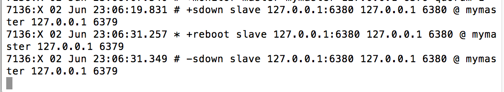

本文主要介绍高可用性redis集群的配置。为了提高网站的响应速度，现在基本都把常用的数据放在redis缓存中，redis作为一个缓存数据库已经在各大公司得到了广泛的应用。首先内存的资源是有限制的，随着需要缓存的内容越来越多，redis需要满足scale out横向扩展，这就需要多台主机协调提供服务，即分布式多个redis实例协同运行。其次，redis本身只支持单线程，一般只能使用10-20G的内存，这对于现在动辄都是200G内存的服务器来说造成很大的资源浪费，因此我们需要对数据分片，存储在多个redis实例中。最后redis作为内存数据库，宕机容易造成数据的丢失，因此我们需要配置多个主从来保证redis服务的高可用性。本文介绍的高可用性redis集群架构如下：
首先使用redis自带的sentinel对redis实例设置多个主从，然后在用开源的twenproxy对多个主从redis实例进行分片，最后使用haproxy对twenproxy进行负载均衡。
一：sentinel配置
redis-sentinel是redis官方推荐的高可用性解决方案，sentinel将会不时的监控redis是否按照预期良好的运行。当master宕机时，sentinel将会自动切换，将salve升级成master，从而保证redis的可用性。
首先我们配置两个redis实例，一个作为master，一个作为slave，master运行在端口6379，slave运行在6380端口。slaver配置如下：
|
|
启动master和slave如下图所示：
redis自动同步数据，默认情况下slave为只读。对sentinel的设置如下：
|
|
第一行配置说明sentinel去监视一个名为mymaster的主服务器，这个服务器的地址为127.0.0.1端口号为6379,而将这个主服务器判断为失效至少需要1个sentinel同意.（只要同意的sentinel数量不达标，自动故障迁移就不会执行。同时还要注意，无论你设置要多少个sentinel同意判断一个服务器失效，一个 sentinel都需要获得系统中多数（majority)sentinel的支持， 才能发起一次自动故障迁移，换句话说，在只有少数（minority） sentinel进程正常运作的情况下,sentinel是不能执行自动故障迁移的。其他选项的基本格式如下：down-after-milliseconds 选项指定了 sentinel认为服务器已经断线所需的毫秒数.如果服务器在给定的毫秒数之内,没有返回sentinel发送的PING命令的回复,或者返回一个错误,那么 sentinel将这个服务器标记为主观下线（subjectively down，简称 SDOWN ）。sentinel failover-timeout mymaster表示设置failover的超时时间是多少毫秒。sentinel config-epoch mymaster表示允许一次性有几台slave连接新的master（建议一个）。
启动sentinel：
|
|
关闭slave显示+sdown，重启slave，显示+reboot，-sdown。如下图：

关闭master，sentinel自动切换，将slave升级成master。如下图：
二：twenproxy配置
twenproxy，也叫nutcraker，是Twitter开源的一个redis和memcache代理服务器。通过twenproxy可以使用多台服务器来水平扩展redis服务，可以有效的比喵redis单点故障。虽然使用twenproxy会带来一定的性能损失（Twitter测试大概在百分之20），但是能够提高整个系统的稳定性和可用性，twenproxy可以把数据sharding到多台服务器上。
- 1 安装
tenproxy的安装非常简单。先下载nutcracker-0.3.0.tar.gz，然后解压编译安装。
|
|
- 2 配置文件1234567891011alpha:listen: 127.0.0.1:22222hash: fnv1a_64distribution: ketamaauto_eject_hosts: trueredis: trueserver_retry_timeout: 30000server_failure_limit: 1servers:- 192.168.1.10:6379:1 master0- 192.168.1.7:6379:1 master1
listen表示服务的地址和端口，hash表示具体使用的hash函数，distribution表示使用的分发模式（可用模式ketama，modula，random），auto_eject_hosts表示是否在节点无法响应的时候临时摘除节点，redis，表示是否是redis的proxy，server_retry_timeout表示重试的时间，单位为毫秒，server_failure_limit表示节点故障多少次就摘除掉。
3 启动服务
12nutcracker -t 测试配置文件nutcracker -d -c /usr/local/twemproxy/conf/nutcracker.yml4 性能测试
分别对twenproxy和redis进行set和get测试，测试结果下图所示，结果显示twenproxy有部分性能损失。
三：haproxy配置
haproxy是一款功能强大，使用灵活的反向代理软件，其提供了高可用性，负载均衡，后端服务器代理等功能。和nginx相比，haproxy支持虚拟主机，并可以工作在4层（tcp层）和7层（http层）。能够补充nginx的一些缺点，比如session的保持，cookie的引导等工作，单纯从负载均衡上衡量haproxy的效率高于nginx,并且提供多种负载均衡算法。
- 1 安装
|
|
- 2 配置
|
|
- 3 启动
|
|
关闭其中一个后台服务。
四：keepalived
keepalived是集群管理中保证集群高可用的一个服务软件，用来防止单点故障。keepalived是以VRRP协议为基础实现，即将N台提供相同功能的服务器组成一个服务组，这个组里有一个master和多个backup，master上面有一个对外提供服务的VIP，master会发送组播，当backup收不到vrrp就认为master已经宕机了，这时根据vrrp的优先级来选举一个backup当master，这样就保证了服务的高可用性。具体的配置将会在未来更新。